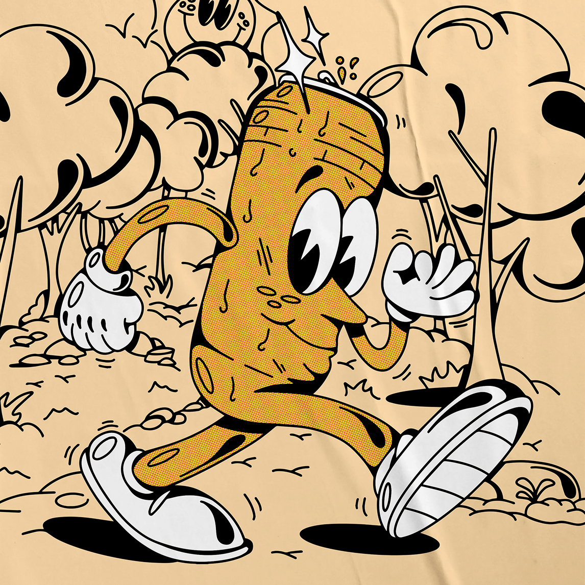

Shallo Beer Shop 7 Years, Milano
Campagna ideata per celebrare il settimo anniversario di una delle birrerie più rinomate e apprezzate di Milano: Shallo – Beer Shop.
Ho curato illustrazione e type design: una lattina di birra artigianale che se ne va a spasso nel bosco, disegnata in stile cartoon anni '30, e un lettering "Shallo" morbido e gonfio. Il disegno è diventato il volto del poster dell'evento in Piazza Mirabello e di una serie di t-shirt celebrative. Art direction e graphic design di Burro Studio.
Una lattina
a spasso nel bosco
Guanti bianchi, sneakers enormi, linea nera spessa e retino halftone sull'arancio: un omaggio ai cartoon rubber hose, con la lattina appena stappata che saluta mentre attraversa il bosco. Passa sopra l'illustrazione per guardare i dettagli da vicino.Tocca un dettaglio qui sotto per guardarlo da vicino con la lente.

Passa sopra con la lenteT-shirt
L'illustrazione esce dal poster e finisce sulle t-shirt dell'anniversario: logo piccolo sul petto, artwork completo sulla schiena.
14/07/2022
Dal poster alla piazza: magliette indossate, sticker sui tavoli e la fila davanti al beer shop.
Un anniversario da festeggiare?
Lettering, personaggi e illustrazioni per eventi, poster e merch. Scrivimi e disegniamo insieme la prossima festa.